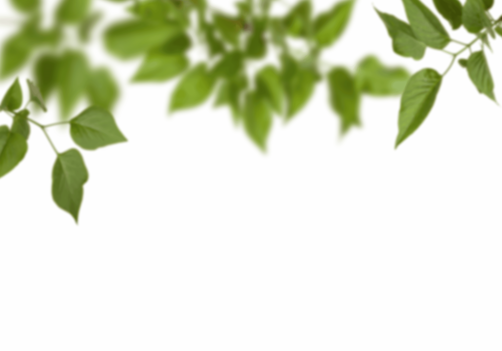
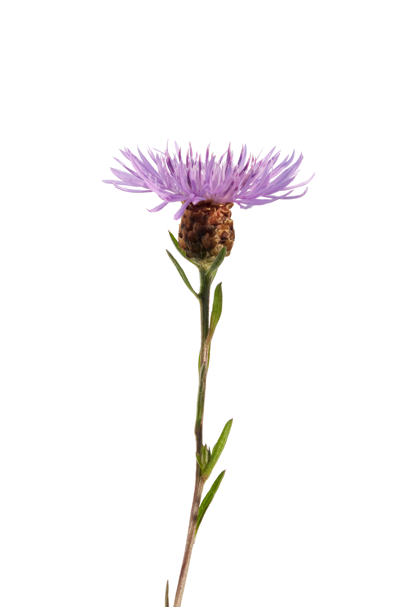
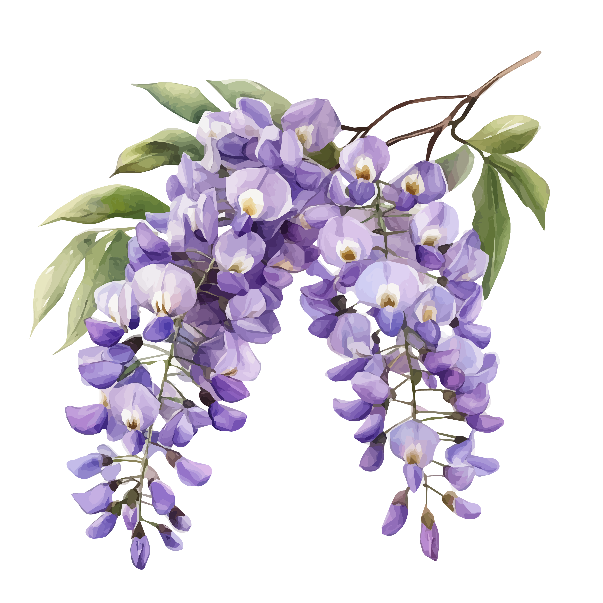
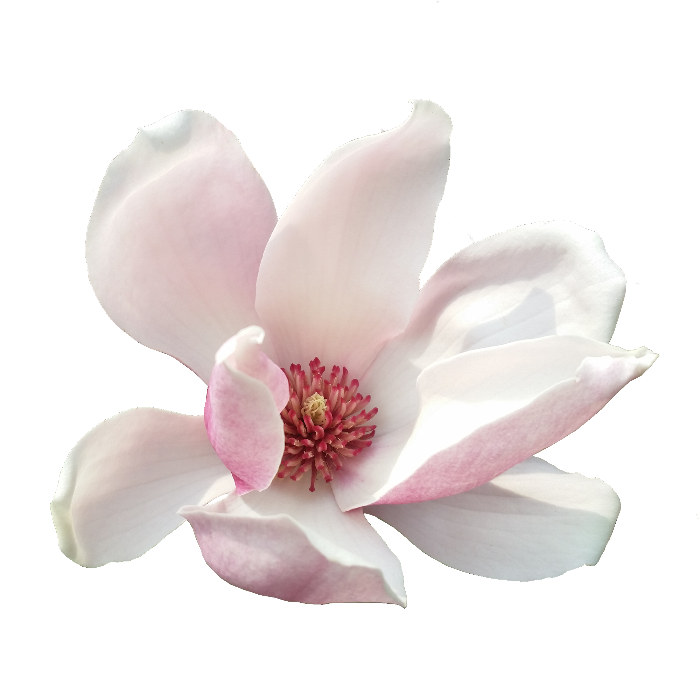

Observation Patterns in NC: Using Citizen Science for Conservation
"What is this project?"
"Why does this even matter??" (And what's the diff between research grade and unverified?)
Common Species
Rare Species
Invasive Species
Eastern Redbud

Carolina Thistle

Chinese Wisteria
Mountain Laurel

Bigleaf Magnolia
Bradford Pear
Want to get involved?
Become a Citizen Scientist
Already using iNaturalist? Support Citizen Science by verifying observation IDs